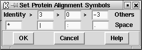

Spin allows the parameters for each analytical option to be set in dialogues immediately prior to their execution, but there are other global parameters which can influence the results obtained, and they are described here.
This section also covers, in its description of the "Results Manager" how results can be manipulated after they have been obtained. As this implies, almost all searches conducted by spin produce results that are retained until the user explicitly deletes them, and these are termed "Permanent results". Any other results are termed "Temporary". At present, the only temporary results are those produced by a variant of the Similar Spans algorithm, ( see section Finding Similar Spans), in which the plot can be overlayed by marking every identical character in each matching span with separate dots. These extra dots are not stored as results and any changes to the SPIN Sequence Comparison Plot, for example plotting new data, will destroy them.
To suggest reasonable ranges of cutoff scores for the Similar Spans ( see section Finding Similar Spans) and Matching Words ( see section Finding Matching Words) comparison functions, and later to help users assess the significance of the matches found between sequences, spin calculates their probabilities and the expected number of matches Staden R, Methods for calculating the probabilities of finding patterns in sequences. CABIOS 5 89-96 (1989). For both algorithms the probability depends on the composition of the two sequences, the cutoff score, and, for the matching spans algorithm, the score matrix. The probability is the chance of finding the given score in infinitely long random sequences of the same composition as the pair being compared. The expected number of matches for any score is calculated by multiplying its probability value by the product of the lengths of the two sequences. Note that no correction is made for the case of comparing a sequence against itself.
The matches found for these two algorithms can be assessed by selecting the Tabulate Scores option, which will produce a list of observed and expected results as shown in the example below.
score 9 probability 1.73e-04 expected 365 observed 1772 score 10 probability 1.17e-05 expected 25 observed 601 score 11 probability 3.60e-07 expected 1 observed 149
In this case there are clearly many more matches at each score level than would be expected by chance.
The maximum number of matches is a guideline limit to the number of matches that a comparison function is allowed to produce. In conjunction with the probability calculations its value is used to determine the range of scores allowed for an option - for example, the lowest "minimum score" for the "find similar spans" function ( see section Finding Similar Spans). Altering the maximum number of matches value will in turn alter the range of scores available in a function. Note that this maximum only provides a guideline and each function will always attempt to calculate all matches. However, if the scores are set too low, and the sequences are long, very large numbers of matches matches may be produced and the functions may run slowly as the program gobbles up increasing amounts of memory to store them.
The maximum number of matches is altered using the Options menu.
The default number of matches is used to determine the default score in the function dialogue boxes. If the two sequences being analysed were scrambled (i.e. had the order of their bases or amino acids changed randomly) and then compared using the default score, they should be found to contain approximately the default number of matches. Hence this number provides users with a crude assessment of the significance of the matches found: if more than the default number are found, the sequences are more similar than is likely by chance.
The default number of matches is altered using the Options menu.
If the horizontal and vertical sequences are the same the comparison plots would be a mirror image about the main diagonal. In this case the default is that only the lower half of the plot is calculated. If the "Hide duplicate matches" checkbutton is not set the entire plot will be displayed. It is important to note this property of the algorithms: if only one half of the plot is displayed the main diagonal has been found to be identical!
This option allows users to select their own score matrix for protein sequence comparison and is available from the "Options" menu which invokes a dialogue box. Enter the full filename of the matrix in the entry box. Clicking on the "browse" button will invoke a file browser. See section File Browser.
The recommended format for the matrices is that used by blast Altschul, Stephen F., Warren Gish, Webb Miller, Eugene W. Myers, and David J. Lipman. Basic local alignment search tool. J. Mol. Biol. 215:403-10 (1990). Note that the NCBI make a whole range of protein score matrices available in this format and we include the one shown below in the package tables directory in a file named pam250.
# # This matrix was produced by "pam" Version 1.0.6 [28-Jul-93] # # PAM 250 substitution matrix, scale = ln(2)/3 = 0.231049 # # Expected score = -0.844, Entropy = 0.354 bits # # Lowest score = -8, Highest score = 17 # A R N D C Q E G H I L K M F P S T W Y V B Z X * A 2 -2 0 0 -2 0 0 1 -1 -1 -2 -1 -1 -3 1 1 1 -6 -3 0 0 0 0 -8 R -2 6 0 -1 -4 1 -1 -3 2 -2 -3 3 0 -4 0 0 -1 2 -4 -2 -1 0 -1 -8 N 0 0 2 2 -4 1 1 0 2 -2 -3 1 -2 -3 0 1 0 -4 -2 -2 2 1 0 -8 D 0 -1 2 4 -5 2 3 1 1 -2 -4 0 -3 -6 -1 0 0 -7 -4 -2 3 3 -1 -8 C -2 -4 -4 -5 12 -5 -5 -3 -3 -2 -6 -5 -5 -4 -3 0 -2 -8 0 -2 -4 -5 -3 -8 Q 0 1 1 2 -5 4 2 -1 3 -2 -2 1 -1 -5 0 -1 -1 -5 -4 -2 1 3 -1 -8 E 0 -1 1 3 -5 2 4 0 1 -2 -3 0 -2 -5 -1 0 0 -7 -4 -2 3 3 -1 -8 G 1 -3 0 1 -3 -1 0 5 -2 -3 -4 -2 -3 -5 0 1 0 -7 -5 -1 0 0 -1 -8 H -1 2 2 1 -3 3 1 -2 6 -2 -2 0 -2 -2 0 -1 -1 -3 0 -2 1 2 -1 -8 I -1 -2 -2 -2 -2 -2 -2 -3 -2 5 2 -2 2 1 -2 -1 0 -5 -1 4 -2 -2 -1 -8 L -2 -3 -3 -4 -6 -2 -3 -4 -2 2 6 -3 4 2 -3 -3 -2 -2 -1 2 -3 -3 -1 -8 K -1 3 1 0 -5 1 0 -2 0 -2 -3 5 0 -5 -1 0 0 -3 -4 -2 1 0 -1 -8 M -1 0 -2 -3 -5 -1 -2 -3 -2 2 4 0 6 0 -2 -2 -1 -4 -2 2 -2 -2 -1 -8 F -3 -4 -3 -6 -4 -5 -5 -5 -2 1 2 -5 0 9 -5 -3 -3 0 7 -1 -4 -5 -2 -8 P 1 0 0 -1 -3 0 -1 0 0 -2 -3 -1 -2 -5 6 1 0 -6 -5 -1 -1 0 -1 -8 S 1 0 1 0 0 -1 0 1 -1 -1 -3 0 -2 -3 1 2 1 -2 -3 -1 0 0 0 -8 T 1 -1 0 0 -2 -1 0 0 -1 0 -2 0 -1 -3 0 1 3 -5 -3 0 0 -1 0 -8 W -6 2 -4 -7 -8 -5 -7 -7 -3 -5 -2 -3 -4 0 -6 -2 -5 17 0 -6 -5 -6 -4 -8 Y -3 -4 -2 -4 0 -4 -4 -5 0 -1 -1 -4 -2 7 -5 -3 -3 0 10 -2 -3 -4 -2 -8 V 0 -2 -2 -2 -2 -2 -2 -1 -2 4 2 -2 2 -1 -1 -1 0 -6 -2 4 -2 -2 -1 -8 B 0 -1 2 3 -4 1 3 0 1 -2 -3 1 -2 -4 -1 0 0 -5 -3 -2 3 2 -1 -8 Z 0 0 1 3 -5 3 3 0 2 -2 -3 0 -2 -5 0 0 -1 -6 -4 -2 2 3 -1 -8 X 0 -1 0 -1 -3 -1 -1 -1 -1 -1 -1 -1 -1 -2 -1 0 0 -4 -2 -1 -1 -1 -1 -8 * -8 -8 -8 -8 -8 -8 -8 -8 -8 -8 -8 -8 -8 -8 -8 -8 -8 -8 -8 -8 -8 -8 -8 1
But for historical reasons the default matrix used by the program is the one shown below.
C S T P A G N D E Q B Z H R K M I L V F Y W - X ? C 22 10 8 7 8 7 6 5 5 5 5 5 7 6 5 5 8 4 8 6 10 2 10 10 10 10 S 10 12 11 11 11 11 11 10 10 9 10 10 9 10 10 8 9 7 9 7 7 8 10 10 10 10 T 8 11 13 10 11 10 10 10 10 9 10 10 9 9 10 9 10 8 10 7 7 5 10 10 10 10 P 7 11 10 16 11 9 9 9 9 10 9 10 10 10 9 8 8 7 9 5 5 4 10 10 10 10 A 8 11 11 11 12 11 10 10 10 10 10 10 9 8 9 9 9 8 10 6 7 4 10 10 10 10 G 7 11 10 9 11 15 10 11 10 9 10 10 8 7 8 7 7 6 9 5 5 3 10 10 10 10 N 6 11 10 9 10 10 12 12 11 11 12 11 12 10 11 8 8 7 8 6 8 6 10 10 10 10 D 5 10 10 9 10 11 12 14 13 12 13 12 11 9 10 7 8 6 8 4 6 3 10 10 10 10 E 5 10 10 9 10 10 11 13 14 12 12 13 11 9 10 8 8 7 8 5 6 3 10 10 10 10 Q 5 9 9 10 10 9 11 12 12 14 11 13 13 11 11 9 8 8 8 5 6 5 10 10 10 10 B 5 10 10 9 10 10 12 13 12 11 13 11 11 10 10 8 8 6 8 5 7 4 10 10 10 10 Z 5 10 10 10 10 10 11 12 13 13 11 14 12 10 10 8 8 8 8 5 6 4 10 10 10 10 H 7 9 9 10 9 8 12 11 11 13 11 12 16 12 10 8 8 8 8 8 10 7 10 10 10 10 R 6 10 9 10 8 7 10 9 9 11 10 10 12 16 13 10 8 7 8 6 6 12 10 10 10 10 K 5 10 10 9 9 8 11 10 10 11 10 10 10 13 15 10 8 7 8 5 6 7 10 10 10 10 M 5 8 9 8 9 7 8 7 8 9 8 8 8 10 10 16 12 14 12 10 8 6 10 10 10 10 I 8 9 10 8 9 7 8 8 8 8 8 8 8 8 8 12 15 12 14 11 9 5 10 10 10 10 L 4 7 8 7 8 6 7 6 7 8 6 8 8 7 7 14 12 16 12 12 9 8 10 10 10 10 V 8 9 10 9 10 9 8 8 8 8 8 8 8 8 8 12 14 12 14 9 8 4 10 10 10 10 F 6 7 7 5 6 5 6 4 5 5 5 5 8 6 5 10 11 12 9 19 17 10 10 10 10 10 Y 10 7 7 5 7 5 8 6 6 6 7 6 10 6 6 8 9 9 8 17 20 10 10 10 10 10 W 2 8 5 4 4 3 6 3 3 5 4 4 7 12 7 6 5 8 4 10 10 27 10 10 10 10 - 10 10 10 10 10 10 10 10 10 10 10 10 10 10 10 10 10 10 10 10 10 10 10 10 10 10 X 10 10 10 10 10 10 10 10 10 10 10 10 10 10 10 10 10 10 10 10 10 10 10 10 10 10 ? 10 10 10 10 10 10 10 10 10 10 10 10 10 10 10 10 10 10 10 10 10 10 10 10 10 10 10 10 10 10 10 10 10 10 10 10 10 10 10 10 10 10 10 10 10 10 10 10 10 10 10 10
This option allows users to set their own sequence similarity levels and alignment symbols for protein sequence alignments. The dialogue (shown below) provides for setting a symbol for identical characters and for three levels of similarity with corresponding symbols.
